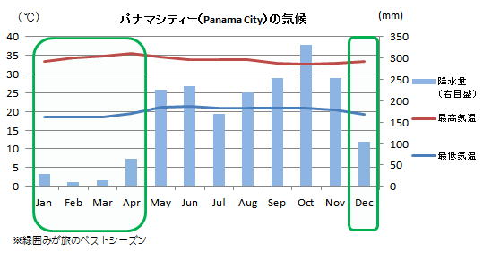
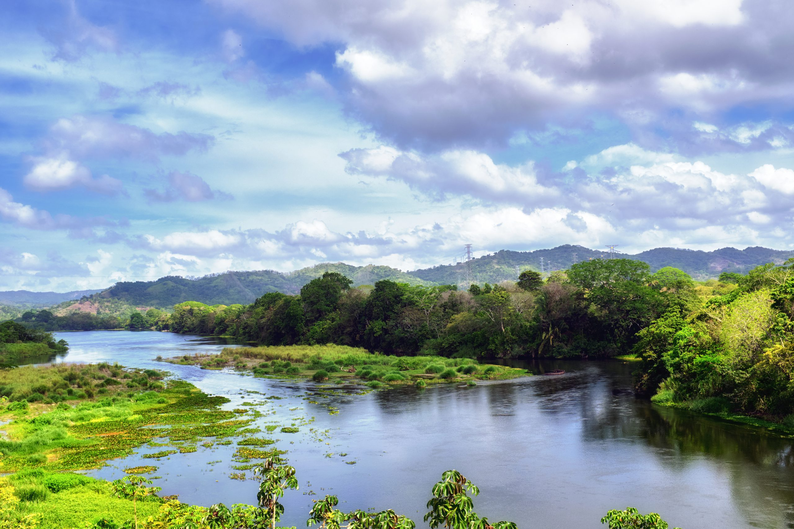
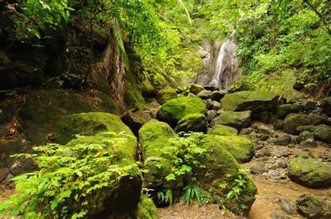
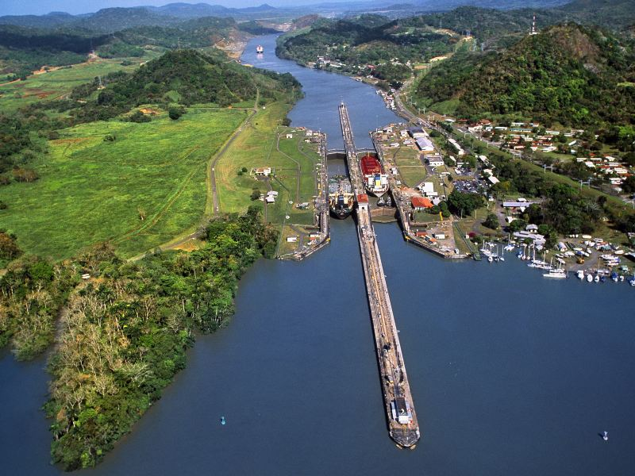
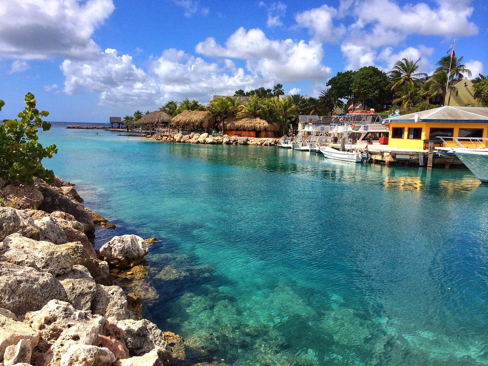
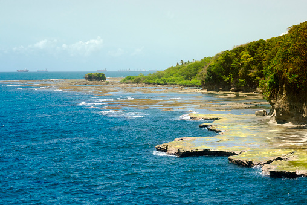

北アメリカ大陸と南アメリカ大陸に挟まれる形で位置しています。 国内にはパナマ運河が流れています。
赤道に近く亜熱帯気候に属し、一部の山岳地帯を除けば1年中高温多湿です。
季節による気温の変化は少ないので、日中であれば年間を通じて日本の夏の服装で過ごせます。

降水量は時期によって異なり、季節は一応1〜4月の乾季、5〜12月の雨季に分けられます。
年間の気温は、首都パナマ・シティの平均最高気温は33℃、最低気温は20℃ほどだが、西部の山岳地帯の町ダビやボケテでは朝晩は防寒着が必要なほど冷え込む日もあります。

パナマでは自然がありのままの姿で生きており、どれもが美しく人間と共存しています。

パナマの人が誇りにするパナマ運河が流れており、 歴史のほとんどがパナマ運河でおこっています。

日本からパナマへの直行便はなく、アメリカのロサンゼルスやヒューストン、ダラスやマイアミ経由でパナマのトクメン国際空港に向かうのが一般的です。
フライト・乗り継ぎ込みで所要19〜30時間ほどです。
自然の宝庫とも呼ばれ、北はカリブ海、南は太平洋に面する自然豊かな場所です。


直接SDGsを掲げてやっている取り組みは出てきませんでした。 ただパナマが日本と協力してある環境改善をしているそうです。 焼畑農業にかわる農業技術の介入と下水処理施設の発展です。